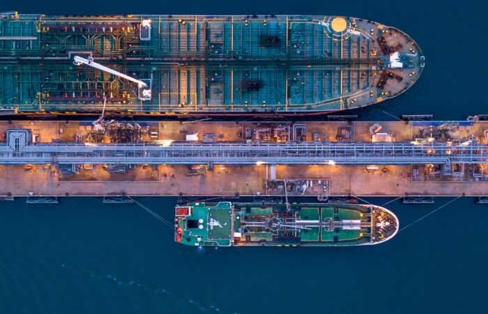
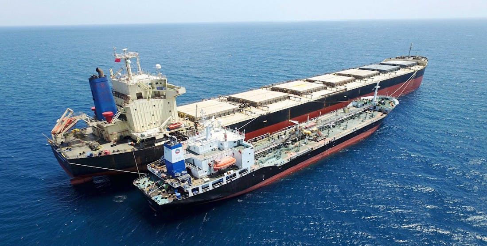
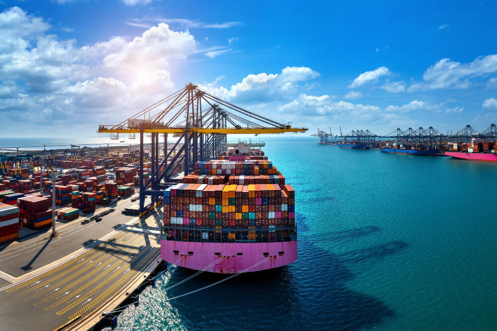

مركز السويس العالمي لتموين السفن
تحليل الفجوة السوقية والفرصة الاستثمارية
السويس: نقطة عمياء استراتيجية
تعد منطقة السويس "نقطة عمياء" في خدمات التموين الحالية رغم كثافة المرور العالمية، مما يخلق فرصة استثمارية نادرة ومربحة للغاية.
المزايا التنافسية الفريدة:
- حجم الفجوة الضخم: 40% من السفن العابرة (9,200 سفينة سنوياً) لديها رغبة كامنة في التموين بالسويس لكنها لا تجد العرض الكافي حالياً1
- ميزة "زمن الانحراف الصفري": التموين في السويس يوفر على السفينة ما يصل إلى 50,000 دولار يومياً من تكاليف التشغيل الإضافية2
- قابلية التوسع الهائلة: السوق الحالي يعاني من نفاذ شبه كامل للمخزونات في فترات الذروة، مما يعني إمكانية تكرار المشروع عدة مرات قبل التشبع3
إمكانية تكرار المشروع (Scalability):
سعة الوحدة الواحدة: تخدم 280-350 سفينة سنوياً (بمتوسط 1,200-1,500 طن/سفينة)
إجمالي الطلب الضائع: 9,200 سفينة سنوياً
عدد المشروعات الممكنة: يمكن تكرار هذا النموذج لحوالي 25-30 مشروعاً مماثلاً قبل تغطية الطلب بالكامل
مراحل إنشاء المشروع: التكاليف والعوائد
تم تصميم المشروع على مراحل متدرجة لتقليل المخاطر الرأسمالية وضمان تدفق نقدي مبكر:
المرحلة الأولى: التشغيل السريع
المرحلة الثانية: التوسع العملاق
الجدول الزمني للتنفيذ (Implementation Roadmap)
التراخيص والتجهيز: الحصول على موافقة وزارة البترول، تأسيس الشركة في المنطقة الحرة، التعاقد على استئجار الخزانات الأرضية.
بدء التشغيل (المرحلة 1): وصول البوارج، بدء عمليات التموين التجريبي، تفعيل منصة الحجز الرقمية.
التوسع (المرحلة 2): نشر الخزان العائم (FSU)، زيادة أسطول البوارج إلى 4 وحدات، الوصول لمبيعات 35,000 طن/شهر.
التحول الأخضر (المرحلة 3): بدء تشغيل وحدات الميثانول والأمونيا، التوسع الإقليمي.
🔮 جاهزية المستقبل (Future-Proofing)
تم تصميم البنية التحتية للمشروع لتكون "Modular" (وحدات قابلة للتعديل)، مما يسمح بإضافة صهاريج الميثانول والأمونيا الخضراء دون الحاجة لإعادة بناء المحطة، مما يضمن استمرارية العمل لعقود قادمة.
التحليل التنافسي والمقارنة الدولية
| وجه المقارنة | السويس (المشروع) | سنغافورة | الفجيرة (الإمارات) | جدة (السعودية) |
|---|---|---|---|---|
| حجم المبيعات السنوي |
الحالي: 0.42 مليون طن المستهدف: 5.0+ مليون طن |
54.92 مليون طن6 | 7.5 مليون طن7 | ~4 مليون طن8 |
| سعر VLSFO | $650 - $663 | $615 - $620 | $553 - $610 | $630 - $640 |
| زمن تنفيذ التموين | < 24 ساعة | < 12 ساعة6 | 5 - 7 أيام7 | 3 - 5 أيام8 |
| ميزة الانحراف | صفر (على الطريق) | منخفضة | متوسطة | منخفضة |
| الميزة التنافسية | علاوة الموقع (Convenience Premium) | الحجم والسرعة | القرب من الخليج | السعر التنافسي |
ملاحظة استراتيجية للمستثمر
السعر في السويس يتضمن "Convenience Premium" - فالسفينة توفر 16 يوماً من الإبحار عند تجنب طريق رأس الرجاء الصالح، أو توفر يوماً كاملاً عند عدم الانحراف لموانئ أخرى، مما يجعل السعر الإجمالي للسويس هو الأكثر تنافسية عالمياً.
تحليل SWOT الاستراتيجي
💪 نقاط القوة (Strengths)
- موقع جغرافي لا يُنافس (Zero Deviation).
- إعفاءات ضريبية كاملة (منطقة حرة).
- طلب كامن ضخم (40% من السفن).
⚠️ نقاط الضعف (Weaknesses)
- البنية التحتية الحالية للتموين محدودة.
- الاعتماد الحالي على التخزين المستأجر.
🚀 الفرص (Opportunities)
- التحول للوقود الأخضر (Green Corridor).
- جذب حصة من سوق الفجيرة وسنغافورة.
- تطبيق الرقمنة لزيادة الثقة.
🛡️ التهديدات (Threats)
- الاضطرابات الجيوسياسية في البحر الأحمر.
- تقلبات أسعار النفط العالمية.
التوصيات والاستنتاجات (Recommendations & Conclusions)
📌 التوصيات الاستراتيجية
- سرعة البدء (First Mover Advantage): استغلال الزخم الحالي والبدء الفوري بالمرحلة الأولى (التشغيل عبر البوارج) لانتزاع حصة سوقية مبكرة.
- الشراكات الذكية: بناء تحالفات مع كبار موردي الوقود العالميين لضمان سلاسل الإمداد وتقليل مخاطر تقلب الأسعار.
- التركيز على التكنولوجيا: تبني أنظمة القياس الذكية (MFM) والمنصات الرقمية منذ اليوم الأول لبناء سمعة "الشفافية والموثوقية".
- المرونة التشغيلية: الحفاظ على نموذج تشغيل مرن (Asset-Light) في البداية لتقليل النفقات الرأسمالية وسرعة التكيف مع متغيرات السوق.
💡 الخلاصة (Conclusion)
إن مشروع تطوير قطاع تموين السفن في المنطقة الحرة لقناة السويس ليس مجرد فرصة استثمارية، بل هو ضرورة استراتيجية لاستكمال منظومة الخدمات البحرية في أهم ممر ملاحي في العالم.
مع توفر الطلب الكامن، والموقع الجغرافي الفريد، والدعم الحكومي (المنطقة الحرة)، يمتلك المشروع كافة مقومات النجاح ليصبح مركزاً عالمياً للطاقة (Energy Hub)، محققاً عوائد مالية مجزية ومساهماً في تعزيز مكانة مصر اللوجستية.
صور محطات مماثلة بالموانئ المنافسة


تصورات شكل المحطة في السويس (نماذج مرسومة)
الرسومات التالية Infographics أصلية مبنية على الوصف التشغيلي (وليست صوراً حقيقية).


المنصة الرقمية: استنساخ تجربة سنغافورة (Smart Bunkering)
السر وراء هيمنة سنغافورة
نجحت سنغافورة في بناء "الثقة الرقمية" عبر إلزام الموردين بأنظمة (Digital Bunkering) وعدادات ذكية (MFM)، مما قضى على النزاعات التجارية وجعلها الوجهة المفضلة للخطوط العالمية.
1. نموذج سنغافورة (The Benchmark)
- الشفافية المطلقة: استخدام إيصالات التسليم الرقمية (e-BDN) قلل النزاعات بنسبة 90%.
- الكفاءة التشغيلية: توفير 4 ساعات في كل عملية تموين بفضل الأتمتة.
- الأثر: تعزيز مكانتها كمركز عالمي موثوق رغم ارتفاع تكاليف التشغيل لديها.
2. تطبيق النموذج في السويس
- منصة "Suez Smart Hub": تطبيق موحد لحجز الوقود، تتبع البوارج لحظياً، والدفع الإلكتروني.
- شهادات الجودة (Blockchain): توثيق مصدر وجودة الوقود لجذب السفن الأوروبية.
📉 الأثر المتوقع على الإيرادات في السويس:
1. زيادة الحجم: جذب 15-20% عملاء إضافيين يبحثون عن "وقود موثوق" (Trusted Fuel).
2. علاوة السعر: إمكانية إضافة "علاوة تقنية" (Tech Premium) بقيمة 2-3 دولار/طن مقابل الخدمة الموثوقة = 10-15 مليون دولار إيرادات إضافية سنويًا (عند الوصول لـ 5 مليون طن).
الإطار التشريعي والضوابط القانونية
أ. قانون الاستثمار رقم 72 لسنة 2017
- إعفاء ضريبي كامل: 100% إعفاء من ضريبة الأرباح التجارية، القيمة المضافة، والرسوم الجمركية9
- رسوم المنطقة الحرة (المادة 41): 2% فقط من قيمة الوقود الوارد (CIF) - يحل محل كافة الضرائب السيادية9
- حرية تحويل الأرباح: ضمان كامل لتحويل الأرباح والتدفقات الدولارية للخارج دون قيود9
- حماية الاستثمار: ضمانات قانونية ضد المصادرة والتأميم
ب. ضوابط وزارة البترول والهيئة العامة للبترول (EGPC)
- رخصة مزاولة النشاط: تمنحها وزارة البترول بعد موافقة اللجنة القومية (تم منح تراخيص لشركات عالمية مثل Minerva وPeninsula في 2023)10
- التسجيل لدى EGPC: تقارير مالية مدققة + خطابات بنكية عبر SWIFT10
- مراقبة الجودة ISO 8217: التزام صارم بالمواصفات القياسية الدولية11
- نظام قياس التدفق الكتلي (MFM): تركيب عدادات لضمان الشفافية ومنع منازعات الكمية12
- السلامة والبيئة (HSE): الالتزام بدليل الدفاع المدني واتفاقية MARPOL الدولية13
إدارة المخاطر (Risk Management)
1. المخاطر الجيوسياسية: تأثير التوترات على حركة الملاحة.
⬅️ خطة التخفيف: تنويع المحفظة لخدمة السوق المحلي والسفن الساحلية كبديل مؤقت، واستخدام وحدات تخزين عائمة (FSU) يمكن نقلها عند الضرورة.
2. تقلبات أسعار الوقود: التغير المفاجئ في أسعار النفط.
⬅️ خطة التخفيف: عقود تحوط (Hedging) وعقود Back-to-Back مع الموردين لضمان هامش ربح ثابت بغض النظر عن سعر البرميل.
3. المخاطر البيئية: حوادث التسرب النفطي.
⬅️ خطة التخفيف: الالتزام بمعدات Tier 1 لمكافحة التلوث، وتغطية تأمينية شاملة (P&I Club Insurance).
لماذا يستثمر القطاع الخاص في هذا المشروع الآن؟
💵 استثمار مرن
يبدأ من 10 مليون دولار ويتوسع تدريجياً حتى 45 مليون دولار مع نمو الأعمال
📈 عائد استثنائي
معدل عائد داخلي (IRR) يصل إلى 100% في بعض النماذج التشغيلية
🎯 فجوة سوقية ضخمة
إمكانية تكرار المشروع 25-30 مرة في السويس وحدها لسد الطلب الكامل
🛡️ حماية قانونية
مظلة قانون الاستثمار توفر أماناً للأصول وحصانة ضد الضرائب المحلية
🌍 موقع استراتيجي
السويس تتحكم في 12% من التجارة العالمية - موقع لا يُضاهى
♻️ مستقبل أخضر
خطة واضحة للتحول للوقود الأخضر بحلول 2030 مع هوامش ربح أعلى
ملخص مالي سريع (Financial Growth)
المستثمرون المستهدفون
هذا المشروع مثالي لـ:
- ✓ شركات تجارة الطاقة العالمية (Energy Trading Companies)
- ✓ التحالفات اللوجستية البحرية (Maritime Logistics Alliances)
- ✓ صناديق الاستثمار المتخصصة في البنية التحتية (Infrastructure Funds)
- ✓ شركات الملاحة الكبرى الراغبة في التكامل الرأسي (Vertical Integration)
- ✓ المستثمرون المحليون والإقليميون الباحثون عن عوائد مضمونة
معرض صور العمليات والأنشطة





